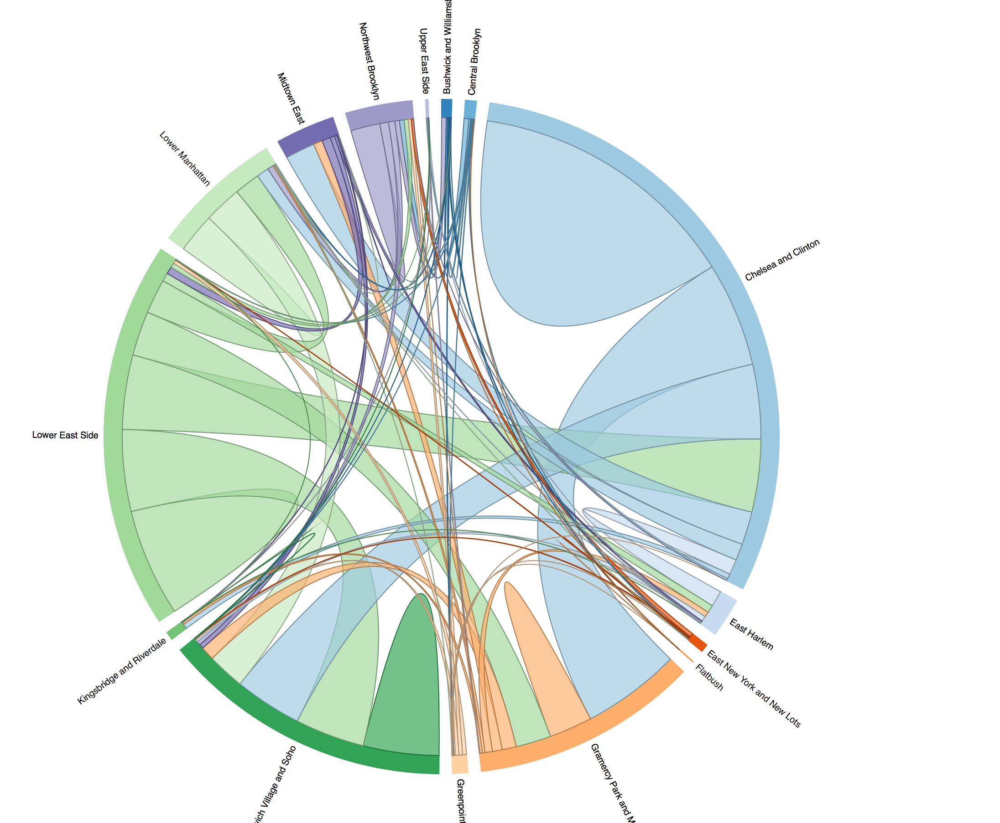
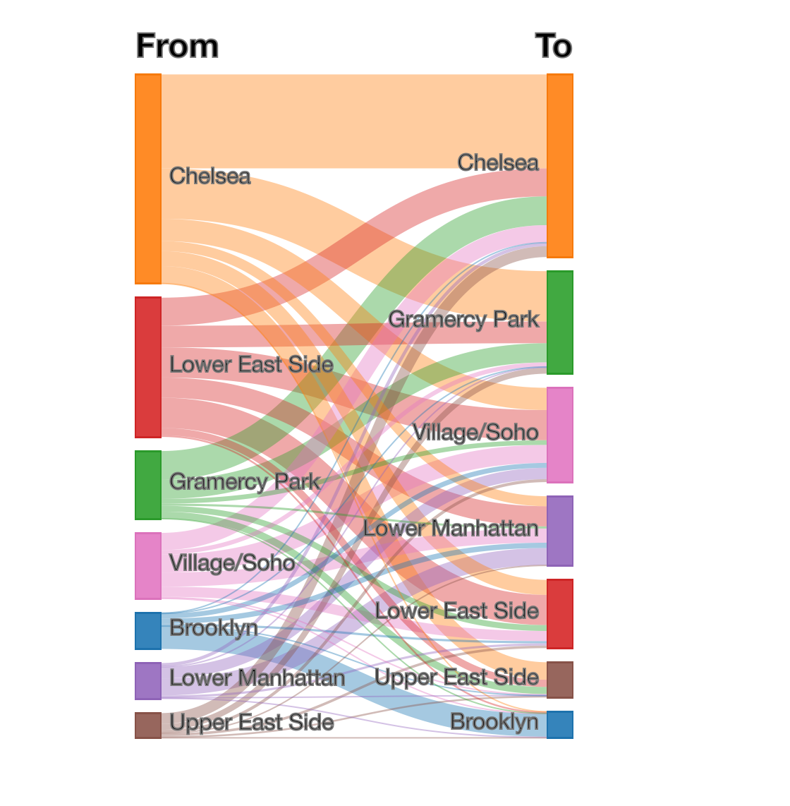
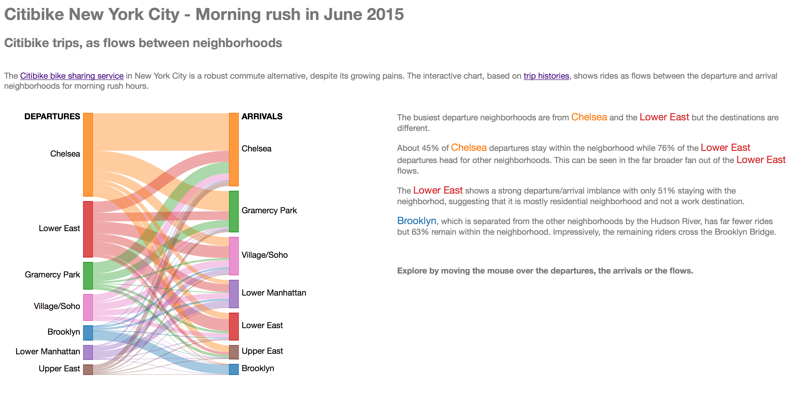
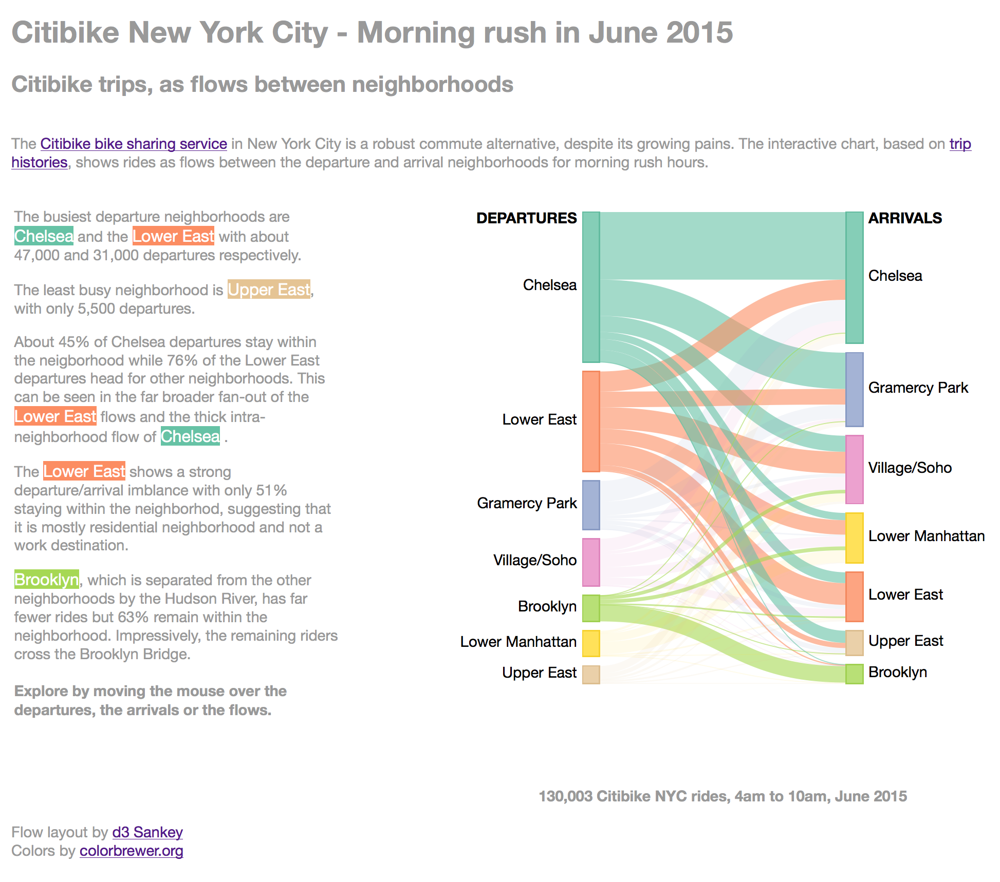
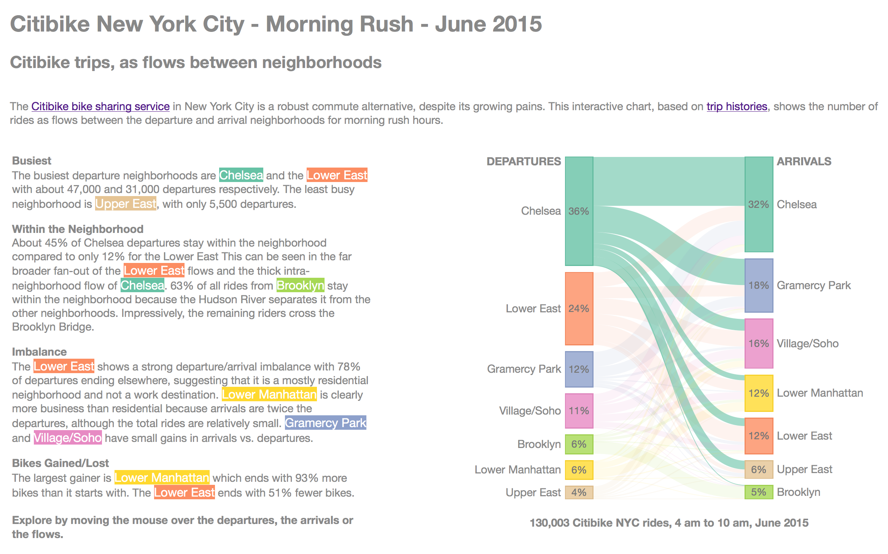

Design Iteration
Chord Layout

Sankey Layout after coloring flows

Sankey layout with attention to text placement, better axis titles, whole page concept.

Sankey layout with mouse over selection of nodes and flows, and active mouseover words. Better balanced color palette, and totals.

Final layout showing percentages in nodes, and expanded tooltips
